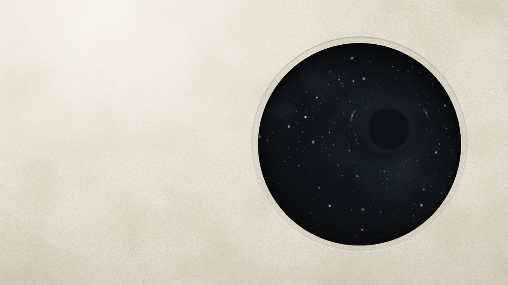

Orb & Ink · Livros de ficção científica
Os mundos12
Cada série é um mundo com as suas próprias leis — e um site próprio. Entre.
-
 The CalorateNão existe clima. Existem apenas decisões.Explorar este mundo
The CalorateNão existe clima. Existem apenas decisões.Explorar este mundo
-
 The Universal MenuEles nunca mentiram. Nós é que nunca lemos o menu.Explorar este mundo
The Universal MenuEles nunca mentiram. Nós é que nunca lemos o menu.Explorar este mundo
-
 World Without HumansAs pessoas partiram. Alguém veio ler o que deixaram.Explorar este mundo
World Without HumansAs pessoas partiram. Alguém veio ler o que deixaram.Explorar este mundo
-
 Terms & ConditionsO primeiro contacto é um aviso de recolha.Explorar este mundo
Terms & ConditionsO primeiro contacto é um aviso de recolha.Explorar este mundo
-

The Barycentric CreedPerdoa-lhe. Não porque ele o mereça. Porque a cidade está a afundar-se.Explorar este mundo -
 The Breathing DarkA escuridão nunca esteve vazia. Estava a respirar.Explorar este mundo
The Breathing DarkA escuridão nunca esteve vazia. Estava a respirar.Explorar este mundo
-
 The Calculus of FortuneAlguém tem de ter azar para que você esteja seguro. Nós só garantimos que sejam sempre as mesmas pessoas.Explorar este mundo
The Calculus of FortuneAlguém tem de ter azar para que você esteja seguro. Nós só garantimos que sejam sempre as mesmas pessoas.Explorar este mundo
-
 The Drowned HousesOs mortos não partiram. São apenas lentos.Explorar este mundo
The Drowned HousesOs mortos não partiram. São apenas lentos.Explorar este mundo
-
 The Night TenantO corpo é seu até às oito.Explorar este mundo
The Night TenantO corpo é seu até às oito.Explorar este mundo
-
 The Relic ProtocolOs mortos votaram.Explorar este mundo
The Relic ProtocolOs mortos votaram.Explorar este mundo
-
 The Seventh WatchSeis adormecidos. Um só casco.Explorar este mundo
The Seventh WatchSeis adormecidos. Um só casco.Explorar este mundo
-
 The Human FactorNão vieram pela nossa ciência.Explorar este mundo
The Human FactorNão vieram pela nossa ciência.Explorar este mundo
Todas as séries · 12
- The Calorate Não existe clima. Existem apenas decisões.
- The Universal Menu Eles nunca mentiram. Nós é que nunca lemos o menu.
- World Without Humans As pessoas partiram. Alguém veio ler o que deixaram.
- Terms & Conditions O primeiro contacto é um aviso de recolha.
- The Barycentric Creed Perdoa-lhe. Não porque ele o mereça. Porque a cidade está a afundar-se.
- The Breathing Dark A escuridão nunca esteve vazia. Estava a respirar.
- The Calculus of Fortune Alguém tem de ter azar para que você esteja seguro. Nós só garantimos que sejam sempre as mesmas pessoas.
- The Drowned Houses Os mortos não partiram. São apenas lentos.
- The Night Tenant O corpo é seu até às oito.
- The Relic Protocol Os mortos votaram.
- The Seventh Watch Seis adormecidos. Um só casco.
- The Human Factor Não vieram pela nossa ciência.